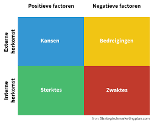

Studie-keuze
 Ik heb voor ICT gekozen omdat ik
leuk vind hoe het allemaal werkt
Ik heb voor ICT gekozen omdat ik
leuk vind hoe het allemaal werkt

Studie-keuze
Ik heb voor ICT gekozen omdat ik
leuk vind hoe het allemaal werkt
SWOT-analyse
 Een persoonlijke SWOT-analyse over mijn sterktes, zwaktes, kansen en bedreigingenProgrammeer ervaring
 Een beetje verstand van
de basis principes
Een beetje verstand van
de basis principes
ICT in het leven
Hacken is tegenwoordig best voorkomend met al die ict systemen